Siswa aktif belajar dalam lingkungan madrasah yang dekat dengan keluarga.
Madrasah Ibtidaiyah Swasta
MI Al-Amin Tumbang Titi
Ruang belajar islami yang menumbuhkan akhlak, kedisiplinan, keberanian tampil, dan kesiapan akademik anak sejak pendidikan dasar.
PPDB 2026/2027
Lingkungan islami
Kegiatan aktif
Angkatan kelulusan kelas VI yang telah menyelesaikan pendidikan dasar.
Pendaftaran murid baru 2026/2027 dibuka hingga 3 Juli 2026.
Ruang data resmi disiapkan untuk pembaruan nilai akreditasi sekolah.
Profil Sekolah
Menata ilmu, akhlak, dan keberanian tampil.
MI Al-Amin Tumbang Titi hadir sebagai madrasah dasar yang menggabungkan pembelajaran kelas, pembiasaan ibadah, kreativitas, dan kedisiplinan harian.
Semangat madrasah adalah membentuk siswa yang berwawasan, berpengetahuan, dan berkepribadian muslim berdasarkan iman dan takwa. Nilai tersebut tampak dalam kegiatan ujian, pentas seni islami, class meeting, upacara bendera, serta kegiatan sosial lingkungan.
Pendidikan agama
Hafalan surah pendek, azan, bacaan Al-Fatihah, dan pembiasaan akhlak.
Akademik tertata
Ujian sumatif, TKA, UAM, dan pengisian RDM berbasis online.
Ekspresi siswa
Pentas seni islami, teater, kaligrafi, dan perlombaan antar siswa.
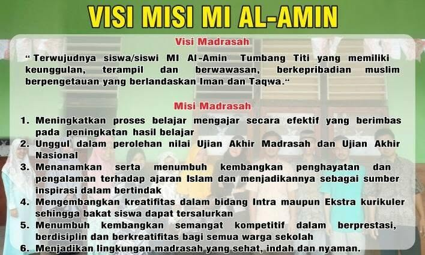
Pengumuman
Informasi pendaftaran, kegiatan, dan agenda sekolah.
Bagian ini disiapkan untuk poster resmi, jadwal, dan kabar terbaru madrasah.
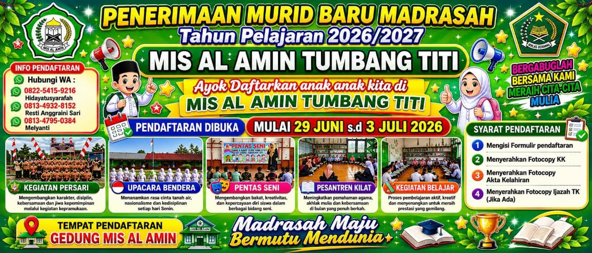
Penerimaan Murid Baru
PPDB 2026/2027 dibuka 29 Juni sampai 3 Juli 2026.
Calon wali murid dapat menyiapkan formulir pendaftaran, fotocopy Kartu Keluarga, Akta Kelahiran, Ijazah TK jika ada, dan map warna hijau.
Lihat Syarat PendaftaranRapat Persiapan Ujian Madrasah T.P. 2025/2026
Koordinasi guru dan madrasah untuk memastikan ujian berjalan tertib.
Upacara Bendera, 13 April 2026
Pembiasaan kedisiplinan dan rasa tanggung jawab siswa di lingkungan sekolah.
Ruang poster dan banner berikutnya
Area ini siap dipakai untuk informasi resmi berikutnya dari pihak madrasah.
Kegiatan Siswa
Kegiatan sekolah yang aktif, terarah, dan dekat dengan keseharian anak.
Foto kegiatan dipilih dari dokumentasi madrasah agar wali murid melihat suasana sekolah yang nyata.
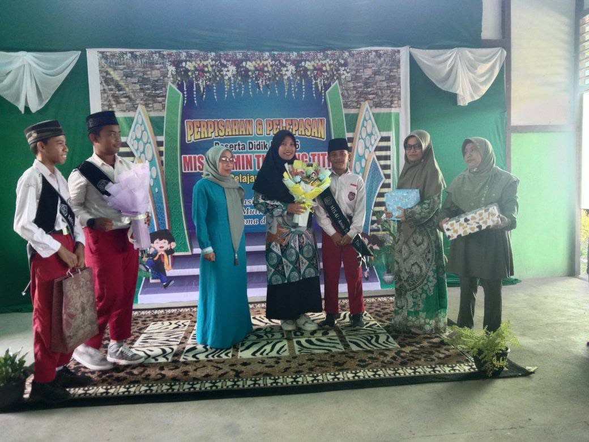
Pentas Seni Islami
Azan, bacaan surah, kaligrafi, teater, dan keberanian tampil.
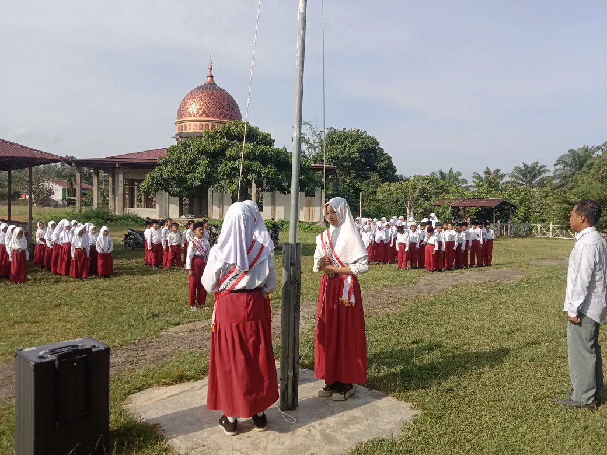
Upacara Bendera
Melatih disiplin, kepemimpinan, dan kebersamaan setiap siswa.
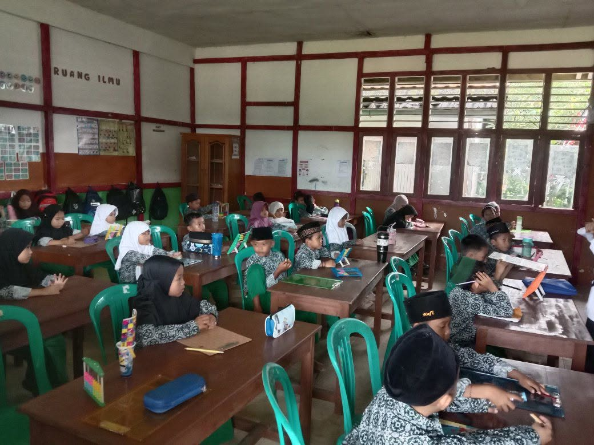
Pembelajaran Kelas
Belajar akademik dengan pendampingan guru di ruang kelas.
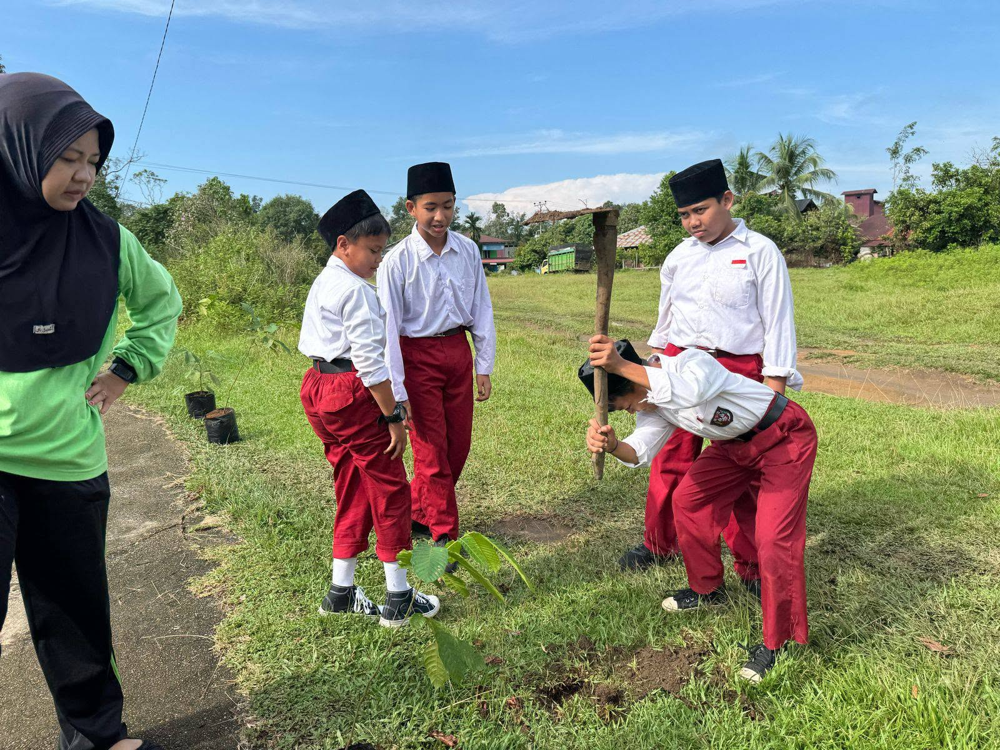
Peduli Lingkungan
Gerakan menanam pohon dan kegiatan luar ruang yang bermakna.
Kelulusan
Rangkaian pelepasan kelas VI berjalan khidmat dan membanggakan.
Kegiatan tasyakuran, pengumuman kelulusan, dan penyerahan SKL menjadi momen penting bagi siswa, guru, serta orang tua. Dokumentasi kelulusan angkatan ke-3 menunjukkan proses pendidikan yang terus tumbuh dari tahun ke tahun.
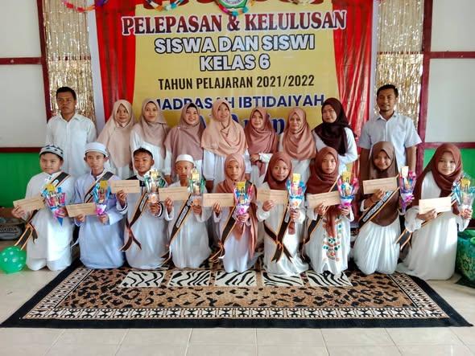
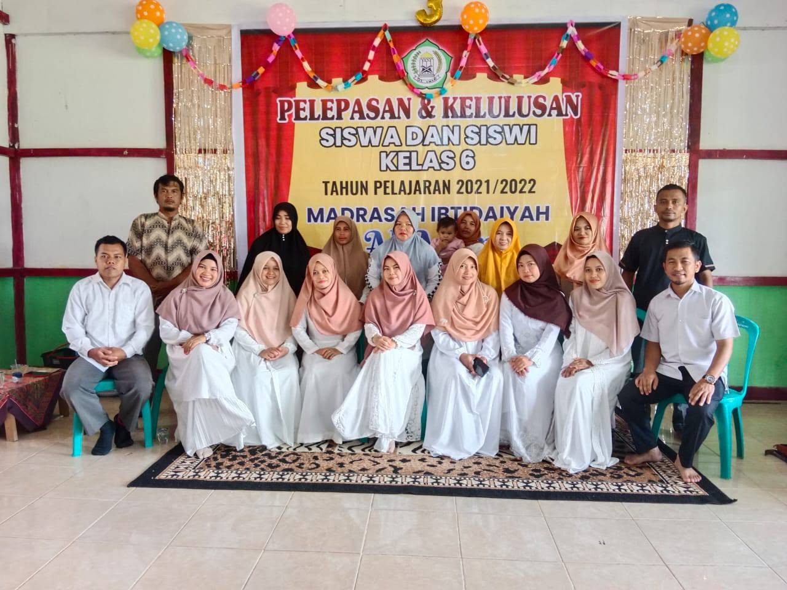
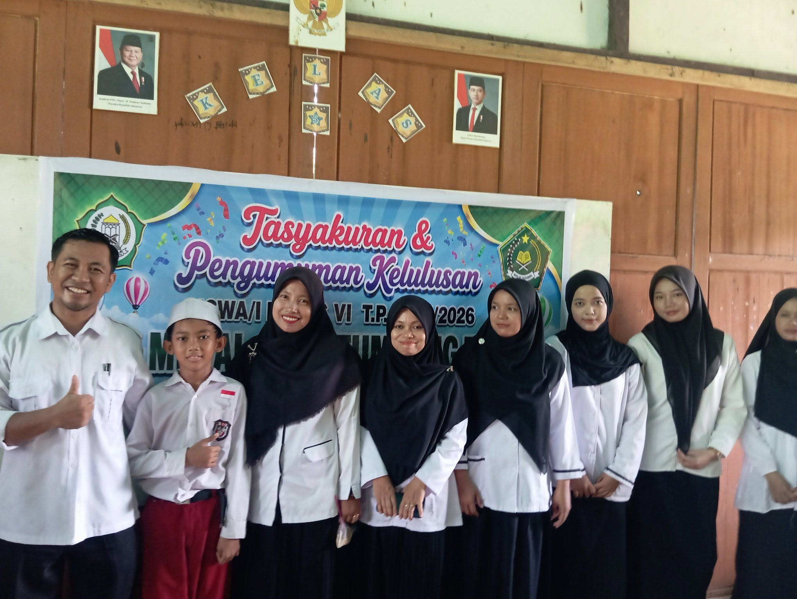
Galeri
Galeri lingkungan dan kegiatan MI Al-Amin.
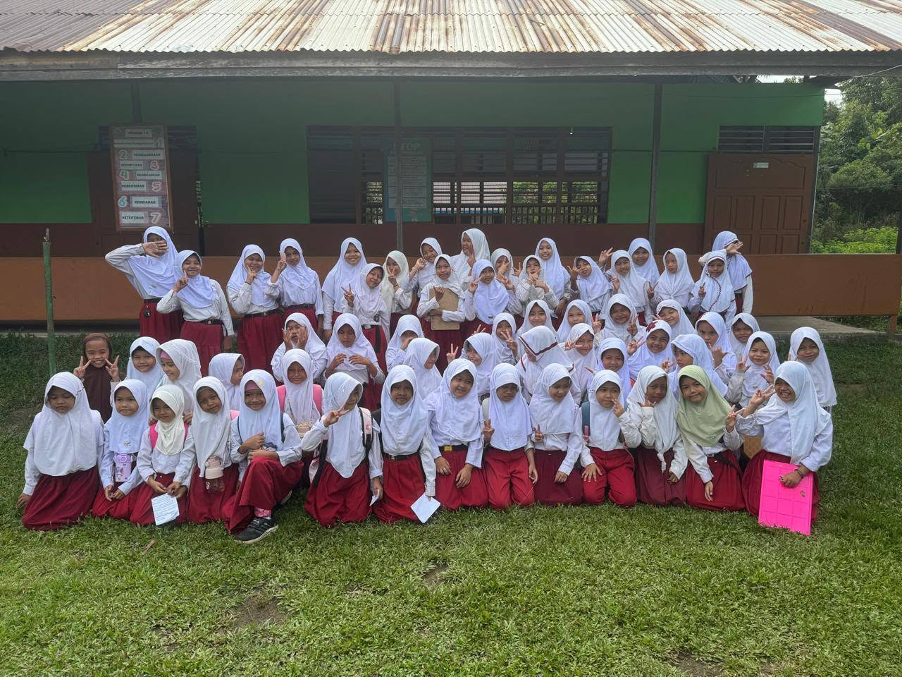
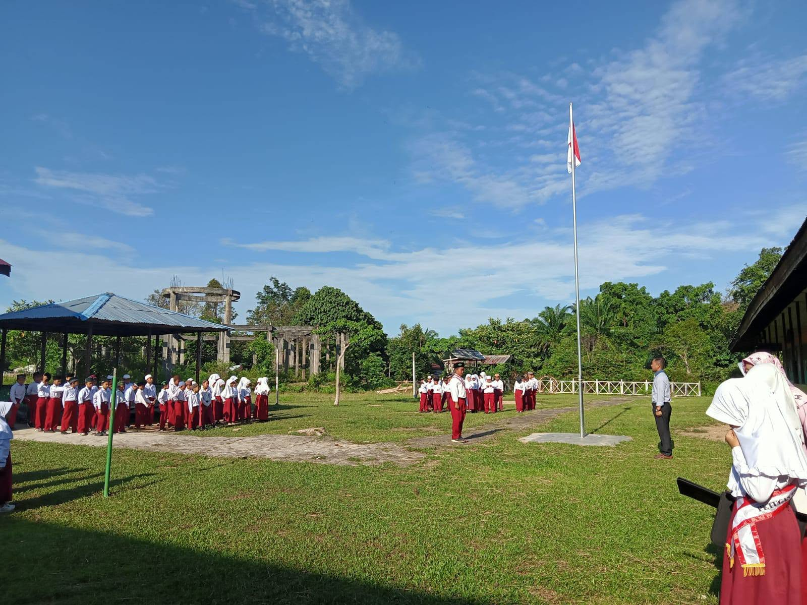
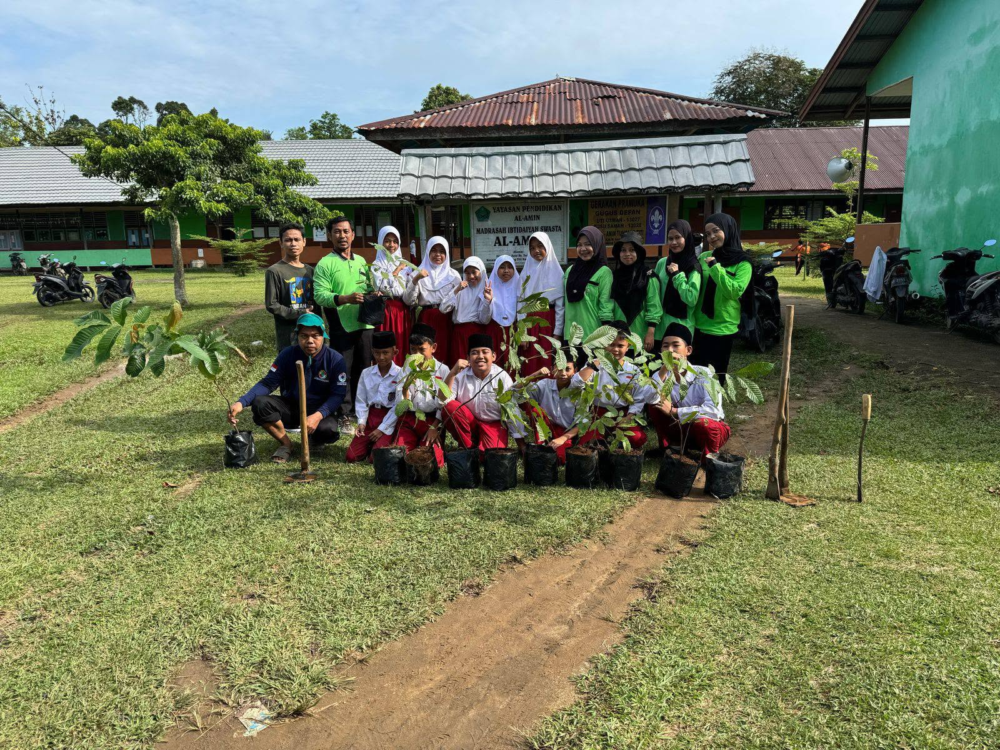
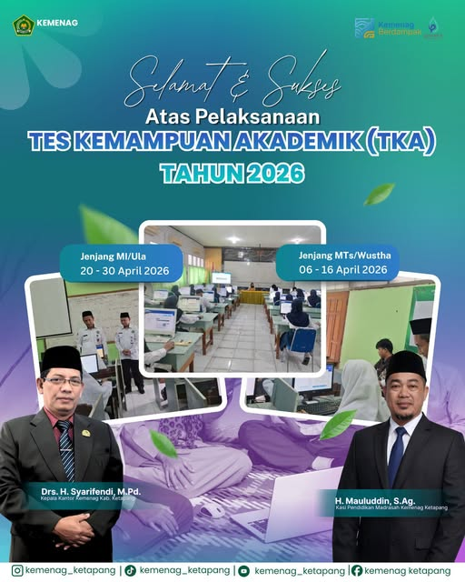
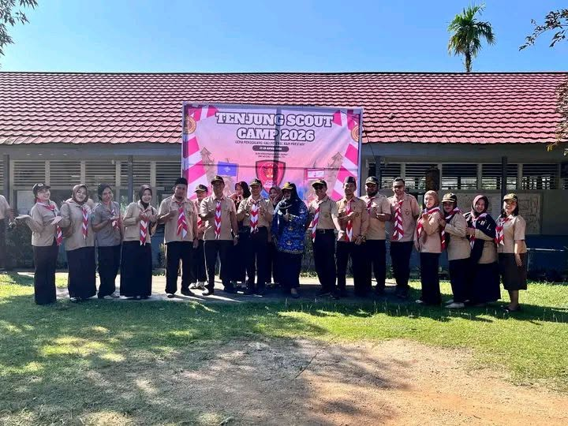
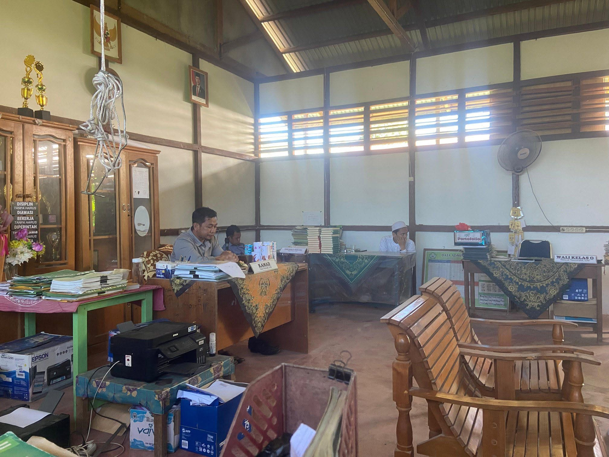
Pendaftaran
PPDB 2026/2027 dibuka mulai 29 Juni sampai 3 Juli 2026.
Pendaftaran dilakukan di Gedung MIS Al Amin Tumbang Titi. Wali murid dapat menyiapkan berkas sejak sekarang agar proses pendaftaran lebih lancar.
- Mengisi formulir pendaftaran.
- Menyerahkan fotocopy Kartu Keluarga.
- Menyerahkan fotocopy Akta Kelahiran.
- Menyerahkan fotocopy Ijazah TK jika ada.
- Berkas dimasukkan ke dalam map warna hijau.